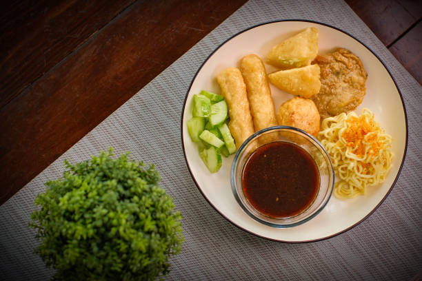

เมนูอาหารประเทศอินโดนีเชีย
3.Pempek

วัตถุดิบ
- สันในไก่ 5 กิโลกรัม
- กระเทียมพริกไทย 5 ขีด
- หอมแดง 5 หัว
- ผงปาปริก้า 3 ช้อนโต๊ะ
- หอมแดง 5 หัว
- ผงยี่หร่า 3 ช้อนโต๊ะ
- น้ำมัน 1/3 กิโลกรัม
วิธีการทำ
- นำส่วนผสมทั้งหมดสำหรับทำทอดมันปลากราย ยกเว้น แป้งสาคู/แป้งมัน ผสมให้เข้ากัน
- จากนั้นนำแป้งปลา 1 ช้อนโต๊ะ ใส่แป้งสาคูประมาณ 2-3 ช้อนโต๊ะ คลุกเคล้าให้เข้ากันแล้วปั้นเป็นก้อนกลมตามต้องการ พักไว้และปั้นแป้งที่เหลือจนเสร็จ
- ต้มน้ำโดยใช้กระทะและปรุงอาหาร pempek ประมาณ 15 นาที เมื่อขึ้นมาบนผิวน้ำแสดงว่าสุกแล้ว พักไว้
- ผัดพริกแกงที่สุกแล้ว
- ทำซุป (คูโคะ): ต้มน้ำกับส่วนผสมทั้งหมดจนน้ำตาลละลาย จากนั้นบดซอสโดยใช้เครื่องบดอาหารหรือเครื่องผสมแบบมือถือ กรอง
- การเสิร์ฟ: วาง pempek ในจาน (คุณสามารถหั่นเป็นชิ้นเล็ก ๆ ได้) ใส่เส้นก๋วยเตี๋ยวแล้วราดด้วยซุป ประดับด้วยแตงกวา บางคนชอบใส่กุ้งแห้งบด
ย้อนกลับ